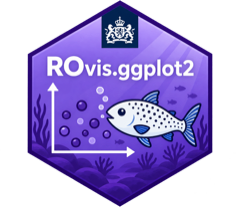

Relocate y-axis title of ggplot object to RIVM style position
Source:R/ro_gg_y_title.R
ro_gg_y_title.Rd![[Experimental]](figures/lifecycle-experimental.svg) Relocates the y-axis title of an existing ggplot object (with
Relocates the y-axis title of an existing ggplot object (with theme_ggrivm(version = "1.0") applied) to the right
location, following RIVM design guidelines. The function calculates the y-coordinate of the highest grid line and
positions the y-axis title slightly above this value for optimal appearance. Note: Since the title may (partly) fall
outside the plot area, always use this function in combination with ggplot's coord_cartesian(clip = "off").
Please note: This is an experimental function. Its features and behavior may change in future updates.
See also
Other ggplot2:
ro_gg_axis(),
ro_gg_group_ticks(),
ro_gg_plot(),
ro_gg_remove_axis_gap(),
ro_gg_save(),
ro_gg_theme()
Examples
if (FALSE) { # \dontrun{
my_plot <- ggplot2::ggplot(data = datasets::mtcars, mapping = ggplot2::aes(x = wt, y = mpg)) +
ggplot2::geom_point() +
ggplot2::labs(title = "mtcars plot") +
ROvis.utils::ro_gg_theme(version = "1.0")
my_plot
#relocate y-axis title to RIVM style position
ROvis.utils::ro_gg_y_title(my_plot) +
ggplot2::coord_cartesian(clip = "off")
} # }